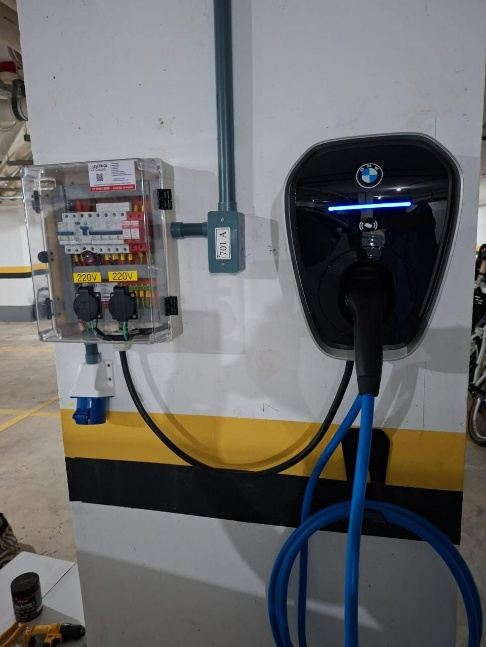

Carregar carro elétrico em tomada comum ou em wallbox? O que muda na segurança
Por equipe Elétrica Conexão Vix · · 6 min de leitura
Resposta rápida
Dá para carregar em tomada comum com o carregador portátil, mas ela foi pensada para uso curto, e a recarga mantém o circuito sob carga por horas. O wallbox, em circuito dedicado e com proteções, é a opção mais segura. Antes de qualquer das duas, um eletricista deve avaliar fiação e disjuntor.

Carregador portátil e wallbox: a diferença
Há duas formas comuns de recarregar em casa. O carregador portátil é o cabo, geralmente fornecido com o carro, que tem uma caixa de controle e plugue de tomada (conhecido como modo 2). O wallbox é um carregador fixo na parede, ligado a um circuito próprio, com mais proteções e potência (modo 3). O portátil não substitui o wallbox, que reúne mais recursos de proteção.
Por que a tomada comum é o ponto fraco
A tomada de casa foi pensada para uso de minutos, e a recarga de um carro elétrico mantém a corrente alta por horas. Conexões frouxas, tomada velha, fiação fina ou sem aterramento esquentam com o tempo. Muitas vezes a tomada existente não serve, e a solução é instalar um wallbox. Alguns condomínios e órgãos de segurança contra incêndio fazem restrições a carregador ligado em tomada em garagem coletiva, então vale conferir as regras do seu prédio.
Se for usar tomada, o mínimo é isto
Circuito exclusivo para o carregador, sem dividir com outros aparelhos.
Cabo na bitola adequada ao circuito e à distância até o quadro.
Aterramento e proteção com DR.
Tomada de boa qualidade, em bom estado e firme, sem folga no plugue.
Nunca usar extensão, benjamin ou régua de tomadas.
Conferir se o plugue ou a tomada esquentam durante a recarga.
Qual escolher
O wallbox em circuito dedicado é a opção mais segura e costuma ser mais rápida. A tomada pode servir como solução provisória, desde que o circuito esteja adequado e tenha sido avaliado por um profissional. A instalação segue a ABNT NBR 17019, para locais de recarga de veículos elétricos, usada junto com a NBR 5410.
E no condomínio?
Em geral é preciso comunicar o condomínio, e o prédio pode pedir responsável técnico e estudo de carga. Leia também o nosso artigo sobre carregador de carro elétrico em condomínio.
Perguntas frequentes
Posso usar extensão para carregar o carro elétrico?
Não. Extensão e benjamin não são feitos para correntes altas por horas e esquentam. O carregador deve ligar direto no ponto adequado.
Tomada de 20 A é suficiente para o carregador?
Depende do carregador, do fio e do disjuntor do circuito. Só uma avaliação no local responde com segurança.
O carregador que veio com o carro pode ser usado?
Em geral é o portátil. Ele pode ser usado num circuito adequado, mas não oferece o mesmo conjunto de proteções que um wallbox.
Preciso avisar o condomínio antes de instalar?
Em geral sim. O condomínio pode exigir projeto, responsável técnico e cumprimento de regras da garagem.